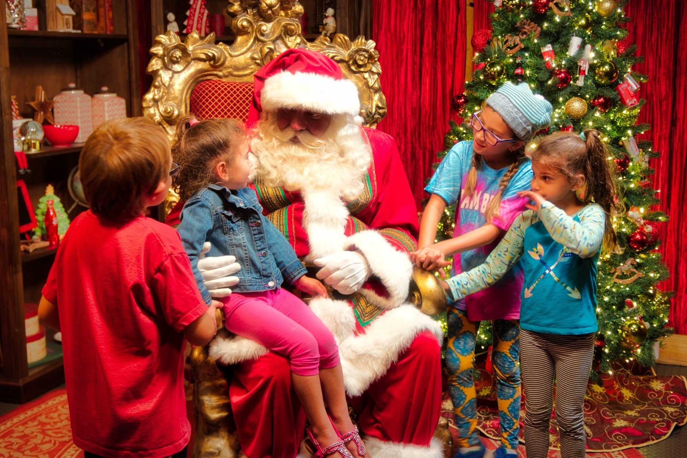
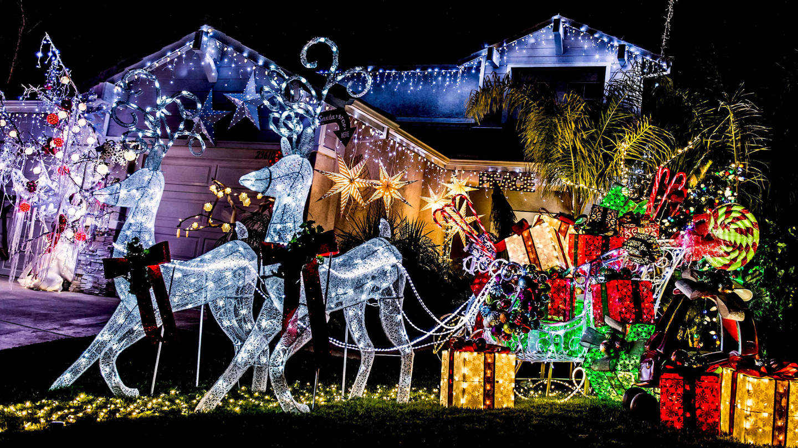

Fun Of Christmas Celebrating
Christmas celebrations include spending time with the family, decorating the entire house, inside and out and shopping, for friends and relatives. Spending Christmas with the family is very important. On this day, all family members spend time in baking cookies, making fudge and preparing a big Christmas dinner, with all the trimmings. The children love to see each other and spend the day playing games and sharing their new gifts and toys that Santa Claus brought for each of them.
Holiday Greenery

The beginning of gift giving during Christmas started from the three wise men, with their three gifts for the Christ child. Since then people have made up different things to tell their children where their Christmas presents came from. The historical Saint Nicholas was known in early Christian legends for saving storm-tossed sailors, standing up for children, and giving gifts to the poor.
Santa Claus

Centuries ago, Romans decorated their homes, public buildings, and temples on festive occasions, and we have followed this ancient custom. During Christmas time, store windows, malls, streetlights, and parking lot poles are decorated to celebrate this joyous time filled with shopping, gift giving, and happiness.
Decorations
The tradition of gift-giving is an old one, but it became associated with Christmas more recently. Around the year 336 AD the date of December 25 appears to have become established as the day of Jesus's birth, and the tradition of gift-giving was reinterpreted and tied to the story of the Biblical Magi giving gifts to baby Jesus; together with another story, that of Santa Claus based on the historical figure of Saint Nicholas, a fourth-century Greek bishop and gift-giver.
Xmas-Gifts
Happy Merry Christmas 2018©copyright All Right Reserved.